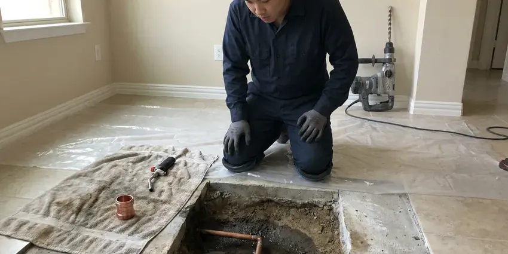

Underground Pipe Repair in Charlottesville, VA
FBN Plumbing finds underground leaks in Charlottesville, VA with acoustic and tracer gear, then digs only where the equipment says to.
- 811 Called Before Every Dig
- Trenchless Options
- Pressure Tested Before Backfill
- Licensed Virginia Plumbers

Leak Under the Yard in Charlottesville, VA?
Call (434) 230-6997 and tell us what you are seeing. We will get a crew out to find it.
Water Mains, Laterals and Yard Lines in Charlottesville, VA
FBN Plumbing repairs the pipes you cannot see, including the water service from your meter, the sewer lateral to the street and buried lines to pools, guest houses and irrigation. We locate before we dig. Electronic locators trace the pipe path and acoustic gear listens for the hiss of escaping water, so the excavation is a pit instead of a trench. Then we pressure test it.
Some of what we do:
- Trenchless pull-through and pipe bursting replacement
- Acoustic and tracer gas leak detection on buried lines
- Pipe path tracing with electronic locators

Additional Plumbing Repair Services in Charlottesville, VA
We offer expert plumbing repair services across Charlottesville, VA to fix leaks, restore flow, and keep your system running smoothly.


Customers
Why Choose FBN Plumbing for Underground Pipe Repair in Charlottesville, VA?
Every truck carries locating gear, excavation tools and pipe in PEX, copper and PVC. Most repairs finish on the first visit. You get one crew from the first sweep of the yard to the final pressure test, instead of a leak detection company, a digger and a plumber all billing separately. Fewer people means fewer delays.
- Written Quotes, Footage, method and price are written up first.
- Pressure Tested, Every repaired line is pressure tested before we backfill.
- Right Materials, PEX or Type K copper for water, Schedule 40 PVC for sewer.
Citywide Coverage
Rental owners and HOAs across Charlottesville call us for repeat leaks on the same lines. Usually the pipe is old. We document each repair and track every failure by date and location so replacement decisions are easier to make.
Experienced Team
Techs ride with senior plumbers for months before running underground calls alone. Buried mistakes stay buried. They learn bedding, depth and fittings on real jobs, with a pressure test on every finished repair.
Safety-First Approach
Repairs use materials approved for direct burial at the depth local code requires. Depth matters more than people think. Where a permit or inspection is needed for a service line replacement, we pull it and keep the trench open until the inspector signs off.
Trusted Certified Charlottesville Plumbing Services Professionals
At FBN Plumbing, we take pride in licensed, certified plumbing services throughout Charlottesville, VA. Those papers on the wall mean something. Every repair, install and maintenance visit follows strict safety and quality rules, and the plumbers doing the work carry recognized industry credentials.
Call Us Now PHCC Plumbing Contractor Recognition
PHCC Plumbing Contractor Recognition Better Business Bureau (BBB) Accreditation
Better Business Bureau (BBB) Accreditation Angi Certified Pro
Angi Certified Pro ISO 9001 Quality Management Certification
ISO 9001 Quality Management CertificationUnderground Pipe Repair Options for Charlottesville, VA Properties
Emergency Underground Pipe Services in Charlottesville
Water bubbling up through the lawn means pressure is escaping somewhere. Do not wait on it. Our after-hours crew locates the break, digs it out and fixes it the same visit in most cases, because the trucks carry common pipe sizes. Shut the meter valve first.

Trenchless Underground Pipe Repair in Charlottesville
Digging a trench across a mature yard is expensive to restore. Pull-through methods save the lawn. We open small access pits at each end, then pull new pipe through the old path or line the old pipe in place, so the expense of putting the yard back together shrinks a lot. Faster, too.
Underground Water Line Repair in Charlottesville, VA
A leaking water service runs at full street pressure around the clock. The meter never stops. Low pressure, a wet spot that never dries and a meter that turns with everything off are the usual clues, so we verify it with a pressure test and then pinpoint it acoustically. We splice in new pipe to code.
HOA and Multifamily Underground Repair in Charlottesville
HOA common areas and apartment complexes have long buried runs under parking and sidewalks. Tenants still need to get in. We locate carefully to avoid unnecessary concrete cutting, schedule work around residents, and document every repair with photos and test results that property managers can hand to the board or the insurer. We work with your schedule.
Underground Storm Drain Repair in Charlottesville, VA
Buried storm drains clog with silt, leaves and roots. Hurricanes, tropical storms and strong coastal storms bring heavy rain and tidal flooding to eastern Virginia, especially in low-lying areas. Then the yard floods. We clear blockages with a jetter, find cracks and disconnected joints on camera, then fix the broken pipe so water drains to the outlet the way it was built to. Downspout tie-ins get checked.
Main Water Line Repair in Charlottesville
Your main water line runs from the meter box to the house under constant pressure. Small leaks grow. A spinning meter dial with every fixture off, falling pressure or a wet spot that never dries tell us to locate, dig and splice the line with code-approved fittings. Rusted steel is better replaced.
Pipe Bursting Services in Charlottesville, VA
Pipe bursting pulls a new pipe through the old one while breaking the old pipe outward. New pipe follows the old path. A bursting head on a cable splits clay, cast iron or brittle plastic, while a continuous HDPE pipe is pulled in behind at the same diameter or bigger. Collapsed sections are fine. Lining cannot do that.

Polybutylene Pipe Replacement in Charlottesville
Polybutylene was used in a lot of homes built in the 1980s and early 1990s. It splits suddenly. The gray plastic turns brittle as chlorine in the water attacks it, and buried runs tend to split at fittings or where the pipe was bent tight during installation. Replacement is the only lasting fix. We use PEX or copper.
Underground Pipe Repair Near Me in Charlottesville, VA
Our Charlottesville crew knows how deep service lines usually run around here and which neighborhoods still have galvanized or polybutylene. That shortens the job. It also means fewer surprises when the hole is open, since we already expect the fittings and transition parts the old pipe will need.
Local matters on underground work because utility rules, service depths and soil conditions differ from one area to the next. This is our home market. That keeps permits and utility coordination predictable. We know who to call.
FBN Plumbing at a Glance
- Licensed and insured plumbers serving Charlottesville, VA
- 24/7 emergency service with same-day scheduling
- Clear written estimates, no hidden fees
- 4.9-star rated by 798+ Virginia customers
Charlottesville Map
Charlottesville Information
- Population
- 44,983
- Area codes
- 434/804/540
- Service area
- Charlottesville and towns within a 40 mile drive
- Nearby
- Harrisonburg, Fredericksburg, Tuckahoe, Lynchburg
Buried pipe in Charlottesville, VA gets pushed around by settling soil, and old joints and thin-wall pipe are the first to leak. Basements are common in northern and western parts of Virginia, while crawlspaces and slabs are more typical in the east and south.
Expert Services
Call FBN Plumbing for honest, reliable plumbing from people who know the trade in Charlottesville, VA.
Our Specialized Plumbing Services in Charlottesville, VA
At FBN Plumbing, you get every kind of plumbing service from one company across Charlottesville, VA. We go from leak detection all the way to full system installations, for homes and commercial buildings, and we do it quickly at a fair price. Take a look at our core services below:


From Locating to Backfill in Charlottesville, VA
Here is how a buried pipe job runs from the first call to the final backfill.
Tell Us What You See
Call (434) 230-6997 and describe the wet yard, high bill or low pressure. We will get someone out quickly.
Locate the Leak
We pinpoint the damaged section with acoustic, electronic and camera equipment, then give you a written quote.
Repair and Restore
We excavate, repair the pipe and pressure test the line. Then we backfill and clean up.
Frequently Asked Questions About Underground Pipe Repair in Charlottesville
A single repair on a buried water line typically costs $800 to $2,500 including locating and excavation. Full replacement costs more. Main water service replacement typically runs $2,500 to $6,500, while sewer lateral repairs usually fall between $1,500 and $5,000 based on depth. You get the price on paper.
Many utilities offer a one-time leak adjustment. It is worth asking. Most want proof that the leak was repaired promptly, and we give you an invoice and repair documentation that shows the date, location and fix. Policies vary by utility.
Main water service and sewer replacements usually do. Small fixes may not. The Charlottesville building department typically wants a permit for any major buried line replacement, which allows an inspection before backfill. We handle the filing.
Acoustic ground microphones pick up the sound of escaping water. Tracer gas helps too. Hydrogen-nitrogen gas pushed into the line rises through the soil at the leak, while a locator shows the pipe path for the survey. The mark is usually very close.
It is pipe repair or replacement through small access pits. Yes, we offer it. Pipe bursting and cured-in-place lining are the two main methods we use for Charlottesville homeowners, so the yard and concrete mostly stay as they are. Not every line qualifies.
In most cities, the homeowner owns that line. The utility owns the meter. The utility usually maintains the meter and the pipe on the street side, so we check which side the leak is on first. It matters for the bill.
Yes. We put the labor warranty on paper. The length depends on the type of repair and the materials used, and we explain exactly what is covered before the work starts. Pipe carries its own coverage.
Check the meter with every fixture off. Look at the leak indicator. If it moves, water is going somewhere, with soggy ground or a hiss near the meter often pointing to the main line. We can confirm it fast.
What People Are Saying About Our Plumbing Experts?

Megan L.
Our upstairs tub drained so slowly that every shower turned into a bath. FBN Plumbing pulled a wad of hair out of the stopper and then snaked the line past the trap. Three months later it still drains fast.
Drain Cleaning · Lynchburg, VA
Nathan E.
Our tankless heater kept throwing an error code and shutting off mid shower. The tech flushed the heat exchanger, which was full of scale, and replaced a bad flow sensor. Hot water has been steady for half a year now.
Water Heater Repair · Harrisonburg, VARachel N.
Hard water was leaving white crust on every faucet and our dishwasher was struggling. The tech tested the water, recommended a softener sized for a family of five, and installed it with a bypass valve in one afternoon. The spots on our glasses are gone.
Water Softener · Tuckahoe, VA
Laura S.
Our 40 gallon tank started leaking from the bottom after thirteen years. The tech hauled the old one out, set a new unit with a fresh expansion tank, and had hot water running in about four hours. He took the old tank with him too.
Water Heater Replacement · Fredericksburg, VAMonica A.
Our water bill nearly doubled in one month with no change in how we used water. The tech checked the meter, heard the leak under the hallway with his equipment, and opened a hole about a foot square. Fixed the same day.
Slab Leak Repair · Fredericksburg, VA
Karen W.
After our third pinhole leak in copper, we stopped patching. FBN Plumbing gave us a written plan room by room and repiped the house in PEX while we stayed in it. The crew covered our floors every morning and cleaned up every night.
Repiping · Richmond, VA